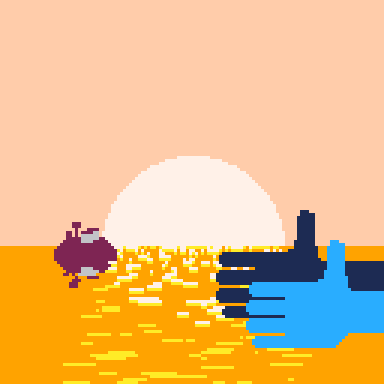
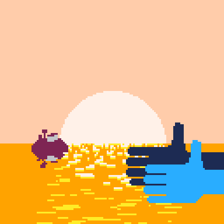

now
September 2024

Working on BLASTODROME has rekindled my love for PICO-8, so I am now working on a rhythm game inspired by the Rhythm Heaven Series.

Working on BLASTODROME has rekindled my love for PICO-8, so I am now working on a rhythm game inspired by the Rhythm Heaven Series.